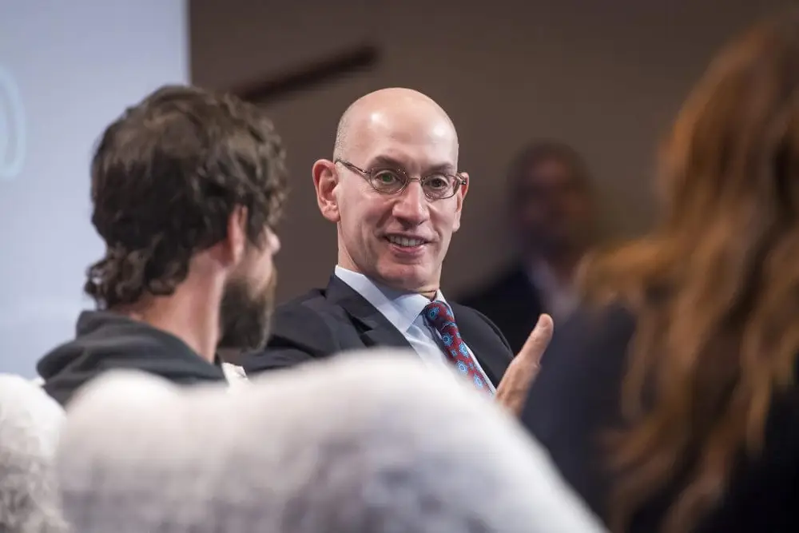

How the NBA has evolved into a 'media and technology company'
Date Posted: October 16, 2025
Every year, the NBA likes to roll out a skit at its annual Technology Summit during All-Star Weekend. Last year, in San Francisco, it was a robotic shooting coach for Steph Curry; the year before in Indianapolis it was Victor Wembanyama using something called NB-AI as his own personal basketball Siri. The ideas change — though Ahmad Rashad is a constant — and while they are mostly (presumably) tongue-in-cheek, they also are a peek into how the league views itself. For most of the first eight decades of its existence, the NBA was a basketball league and built it into a multi-billion-dollar behemoth. Over the last few years, however, the league has begun to think of itself in a different light inside of its midtown Manhattan offices. NBA executives say this evolution in mission and perspective is not a redirection of what the league has traditionally done, but an outgrowth of it. The league now needs to not only sell its media rights, but also get involved in producing games.
Source: New York Times